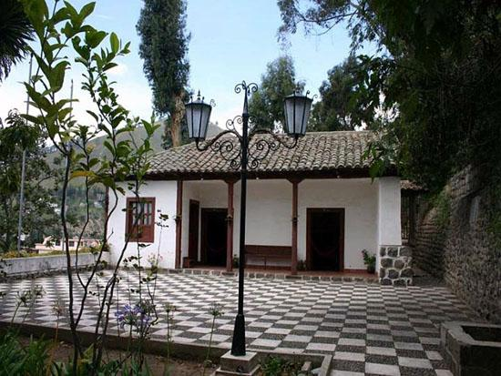
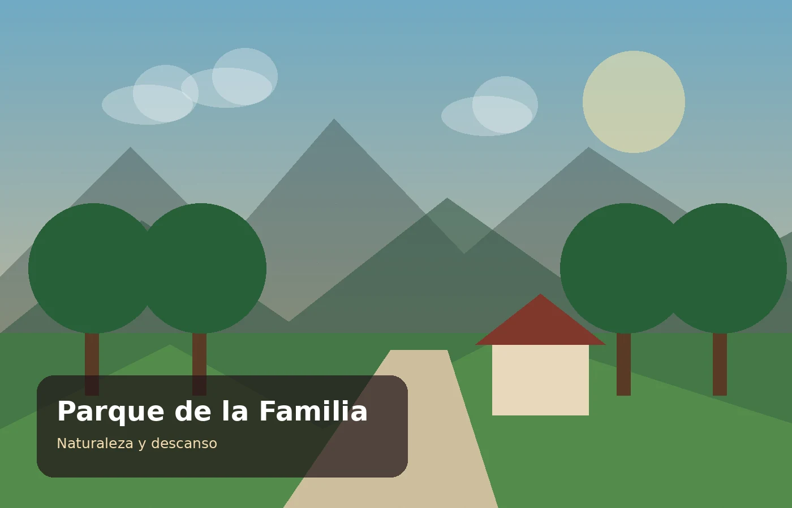

Naturaleza y patrimonio
Jardín Histórico Botánico Atocha-La Liria
Espacio histórico y natural que conserva numerosas especies vegetales y conecta al visitante con la memoria cultural de Atocha.
Cultura, patrimonio, parques y naturaleza en una selección de atractivos del cantón Ambato.
Espacio histórico y natural que conserva numerosas especies vegetales y conecta al visitante con la memoria cultural de Atocha.

Casa patrimonial vinculada a Juan León Mera, escritor ambateño y autor de la letra del Himno Nacional del Ecuador.

Espacio patrimonial relacionado con el reconocido escritor Juan Montalvo, uno de los personajes históricos más importantes de Ambato.

Uno de los parques más representativos del centro de Ambato, con jardines y un monumento dedicado a Juan Montalvo.

Área recreativa que resalta el vínculo de Ambato con las flores y ofrece un ambiente agradable para familias y visitantes.

Amplio espacio recreativo rodeado de naturaleza, apropiado para actividades al aire libre y descanso en familia.
Revisa los paquetes turísticos referenciales de Vive Ambato.